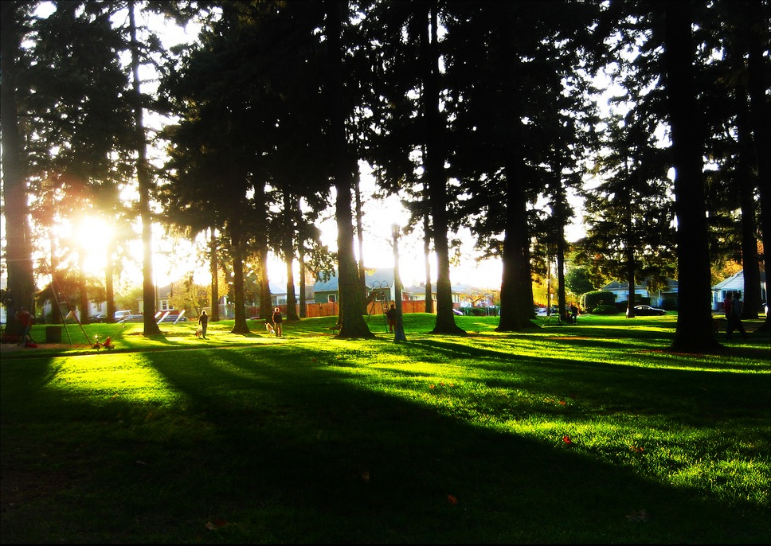

Alberta Park
NE 22nd Ave, Portland
Hours: 5am - Midnight
About:Alberta Park is a 16-acre park in Portland, OR with a designated 1.3 acre off-leash area for dogs on the east side of the park. Plastic bag dispensers and fresh water are available at the park.
Overlook Park
1599 N Fremont St, Portland

Hours: Sunrise - Sunset
About: Bring your pet to play in the unfenced off-leash area in the south end of this beautiful public park with gorgeous views of the city. Don't forget water and waste bags!
Wallace Dog Park
NW 25th Ave, Portland, OR 97210
Hours: Sunrise - Sunset
About: Bring your pet for some off-leash fun in the fenced dog run in the northeast area of this lovely park. Water available nearby but bring bowls and waste bags.
Couch Park
NW 19 & Glisan

Hours: 5am - Midnight
About:Couch Park is a small, 2-acre park in Portland, featuring an off-leash dog play area. This pet-friendly park has poop bags and fresh water available for your dogs.
Wilshire Park
NE 37th Ave, Portland, OR 97212
Hours: 5am - Midnight
About: Wilshire Park in Portland, OR is pet-friendly. The 14-acre park has an off-leash area of just over 1 acre that allows your dogs to run free. The off-leash area is in the northeast corner of the park. Bring poop bags and fresh water for your pooch.
Sellwood Park
SE Oaks Park Way, Portland, OR 97202

Hours: 5am - Midnight
About: Sellwood Riverfront Park in Portland, OR is pet-friendly. The park features a 1.5-acre off-leash area that is a great place for dogs to play. Bring poop bags and water for your pets, as they are not provided on site.
Click to open Map
Cathedral Park
8676 N Crawford St

Hours: 5am - Midnight
About: Cathedral Park is a pet-friendly park in Portland, OR. The park features a half-acre off-leash area for dogs and is located underneath the St. John's bridge and is adjacent to the Willamette River. Water is available, but pet owners should bring their own poop bags.
Forest Park
Latitude: 45.51275
Longitude: -122.71661
Hours: Sunrise - Sunset
Forest Park Wildwood Trail is a moderately easy, 42 mile hike that will take about 2 days to complete with Fido. Take a retreat to this wilderness hike that is within Portland city limits. Using road crossings as a turnaround point can shorten the trail. Please note that dogs must be on leash.
Gabriel Dog Park
SW 45th Ave & SW Vermont St

Hours: 5am - Midnight
One of Portland's largest parks at over 90 acres, Gabriel Park features a 1.5-acre off-leash dog park that is a great place to bring Fido for a morning walk or afternoon run. The area is fenced and has fresh water and poop bags available for your pets.